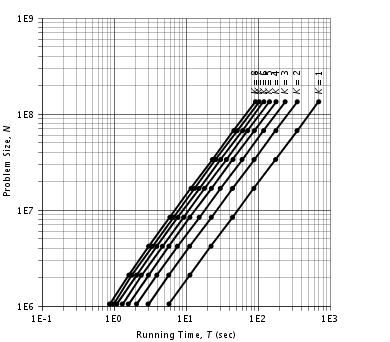
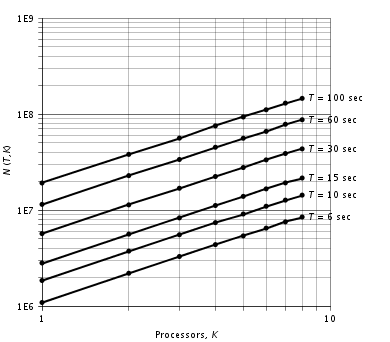
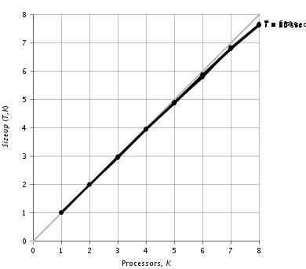
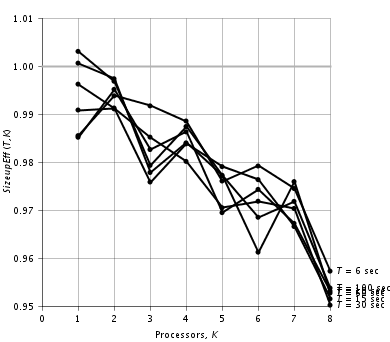

Sizeup
Sizeup
|
||||||||||
| PREV CLASS NEXT CLASS | FRAMES NO FRAMES | |||||||||
| SUMMARY: NESTED | FIELD | CONSTR | METHOD | DETAIL: FIELD | CONSTR | METHOD | |||||||||
java.lang.Object
public class Sizeup
Class Sizeup is a main program that analyzes running time measurements and reports sizeup metrics for a parallel program.
Usage: java Sizeup inputfile
The input file, a plain text file, is formatted as follows. Blank lines are ignored. A pound sign (#) and everything after it on a line is ignored.
The input file begins with running time data. Each line contains an n value, a K value, and one or more T values. The n value, an integer, is the size parameter; it is either the problem size itself or a quantity from which the problem size can be derived. The K value, an integer >= 0, is the number of parallel processors; K = 0 signifies the running times are for a sequential version of the program, K > 0 signifies the running times are for a parallel version of the program. Each T value, a long integer, is a running time measurement in milliseconds.
After the running time data come the problem size specifications. Each line begins with the literal character n followed by an n value and an N value. The n value, an integer, is one of the size parameter values appearing in the running time data section. The N value, a floating point number, is the actual problem size corresponding to that size parameter. If no problem size specification line appears for a certain size parameter in the running time data, then the problem size is taken to be the same as the size parameter.
After the problem size specifications (if any) come the running time specifications. Each line begins with the literal character T followed by a T value in milliseconds. These T values are used to construct the plots of problem size versus K, sizeup versus K, and sizeup efficiency versus K.
After the running time specifications come the plot specifications. Each of the following plot specifications is optional. The plot specification keywords are the same as the methods of class Plot; see that class for further information.
The following plot specifications control the N vs. T plot:
nvst frameTitle "theTitle" (default: no title)
nvst plotTitle "theTitle" (default: "Problem Size vs.
Running Time")
nvst margins theMargin
nvst leftMargin theMargin (default: 42 points)
nvst topMargin theMargin (default: 18 points)
nvst rightMargin theMargin (default: 18 points)
nvst bottomMargin theMargin (default: 36 points)
nvst xAxisStart theStart (default: automatic*)
nvst xAxisEnd theEnd (default: automatic*)
nvst xAxisLength theLength (default: 288 points)
nvst xAxisTitle "theTitle" (default: "Running Time, T (sec)")
nvst yAxisStart theStart (default: automatic*)
nvst yAxisEnd theEnd (default: automatic*)
nvst yAxisTickFormat "theFormat" (default: "0E0")
nvst yAxisLength theLength (default: 288 points)
nvst yAxisTitle "theTitle" (default: "Problem Size, N")
nvst yAxisTitleOffset theTitleOffset (default: 30 points)
*For the N vs. T plot, which is a log-log plot, the
specified X and Y axis starting and ending values are the base-10 logarithms
of the actual values.
The following plot specifications control the problem size plot:
size frameTitle "theTitle" (default: no title)
size plotTitle "theTitle" (default: "Problem Size vs.
Processors")
size margins theMargin
size leftMargin theMargin (default: 42 points)
size topMargin theMargin (default: 18 points)
size rightMargin theMargin (default: 18 points)
size bottomMargin theMargin (default: 36 points)
size xAxisStart theStart (default: automatic*)
size xAxisEnd theEnd (default: automatic*)
size xAxisLength theLength (default: 288 points)
size xAxisTitle "theTitle" (default: "Processors, K")
size yAxisStart theStart (default: automatic*)
size yAxisEnd theEnd (default: automatic*)
size yAxisTickFormat "theFormat" (default: "0E0")
size yAxisLength theLength (default: 288 points)
size yAxisTitle "theTitle" (default: "N(T,K)")
size yAxisTitleOffset theTitleOffset (default: 30 points)
*For the problem size plot, which is a log-log plot, the specified X and
Y axis starting and ending values are the base-10 logarithms of the actual
values.
The following plot specifications control the sizeup plot:
sizeup frameTitle "theTitle" (default: no title)
sizeup plotTitle "theTitle" (default: "Sizeup vs.
Processors")
sizeup margins theMargin
sizeup leftMargin theMargin (default: 42 points)
sizeup topMargin theMargin (default: 18 points)
sizeup rightMargin theMargin (default: 18 points)
sizeup bottomMargin theMargin (default: 36 points)
sizeup xAxisStart theStart (default: 0)
sizeup xAxisEnd theEnd (default: automatic)
sizeup xAxisMajorDivisions theMajorDivisions (default: 10)
sizeup xAxisMinorDivisions theMinorDivisions (default: 1)
sizeup xAxisLength theLength (default: 288 points)
sizeup xAxisTitle "theTitle" (default: "Processors, K")
sizeup yAxisStart theStart (default: 0)
sizeup yAxisEnd theEnd (default: automatic)
sizeup yAxisMajorDivisions theMajorDivisions (default: 10)
sizeup yAxisMinorDivisions theMinorDivisions (default: 1)
sizeup yAxisTickFormat "theFormat" (default: "0")
sizeup yAxisLength theLength (default: 288 points)
sizeup yAxisTitle "theTitle" (default: "Sizeup(T,K)")
sizeup yAxisTitleOffset theTitleOffset (default: 30 points)
The following plot specifications control the sizeup efficiency plot:
sizeupeff frameTitle "theTitle" (default: no title)
sizeupeff plotTitle "theTitle" (default: "Sizeup
Efficiency vs. Processors")
sizeupeff margins theMargin
sizeupeff leftMargin theMargin (default: 42 points)
sizeupeff topMargin theMargin (default: 18 points)
sizeupeff rightMargin theMargin (default: 18 points)
sizeupeff bottomMargin theMargin (default: 36 points)
sizeupeff xAxisStart theStart (default: 0)
sizeupeff xAxisEnd theEnd (default: automatic)
sizeupeff xAxisMajorDivisions theMajorDivisions (default: 10)
sizeupeff xAxisMinorDivisions theMinorDivisions (default: 1)
sizeupeff xAxisLength theLength (default: 288 points)
sizeupeff xAxisTitle "theTitle" (default: "Processors, K")
sizeupeff yAxisStart theStart (default: 0)
sizeupeff yAxisEnd theEnd (default: automatic)
sizeupeff yAxisMajorDivisions theMajorDivisions (default: 10)
sizeupeff yAxisMinorDivisions theMinorDivisions (default: 1)
sizeupeff yAxisTickFormat "theFormat" (default: "0.0")
sizeupeff yAxisLength theLength (default: 288 points)
sizeupeff yAxisTitle "theTitle" (default: "SizeupEff(T,K)")
sizeupeff yAxisTitleOffset theTitleOffset (default: 30 points)
For each line in the running time data section, the program takes the smallest T value as the running time for the given n and K values. For each value of K, the program calculates the following data series: problem size versus running time. For each value of T specified in the running time specifications section, the program calculates the following data series: problem size versus K for K >= 1; sizeup versus K for K >= 1 (sizeup relative to the sequential version if input data for K = 0 is present, otherwise sizeup relative to the parallel version for K = 1); and sizeup efficiency versus K for K >= 1 (sizeup efficiency = sizeup/K).
The program prints the N vs. T, problem size, sizeup, and sizeup efficiency series on the standard output.
The program displays plots of the N vs. T, problem size, sizeup, and sizeup efficiency series, each in its own window. Each plot window has menu options for saving the plot to a PNG image file, saving the plot to a PostScript file, and zooming the display.
Here is an example of an input file:
sizes.txt
20 0 5718 5773 5777 5822 5864 5886 5891
20 1 5798 5809 5817 5823 5849 5865 5897
20 2 2971 2986 2988 3003 3014 3017 3034
20 3 2056 2077 2092 2112 2114 2135 2165
20 4 1579 1591 1595 1603 1604 1605 1610
20 5 1302 1304 1307 1311 1314 1316 1319
20 6 1091 1099 1110 1112 1114 1135 1145
20 7 973 974 979 1007 1027 1027 1105
20 8 867 870 881 883 895 913 1019
21 0 11169 11176 11180 11298 11408 11416 11576
21 1 11334 11390 11415 11430 11432 11445 11458
21 2 5753 5758 5801 5802 5812 5838 5866
21 3 3921 3933 3981 3993 4002 4056 4086
21 4 3006 3011 3012 3016 3033 3052 3058
21 5 2393 2425 2426 2449 2452 2458 2490
21 6 2059 2064 2076 2080 2081 2442 2733
21 7 1776 1781 1783 1785 1799 1802 1825
21 8 1611 1616 1619 1625 1642 1643 1771
22 0 22138 22279 22282 22376 22416 22506 22670
22 1 22216 22290 22316 22549 22575 22637 22662
22 2 11220 11359 11361 11369 11385 11387 11426
22 3 7604 7631 7633 7771 7808 7905 7914
22 4 5780 5814 5817 5863 5886 5886 6807
22 5 4704 4704 4713 4725 4727 4753 4757
22 6 3930 3944 3953 3956 3967 3972 3984
22 7 3405 3426 3431 3444 3446 3455 3687
22 8 3023 3041 3042 3048 3068 3091 3123
23 0 43995 44306 44441 44543 44718 44847 45234
23 1 44170 44209 44331 44345 44364 44702 44767
23 2 22430 22444 22460 22558 22560 22942 22983
23 3 15190 15213 15396 15516 15683 15689 15910
23 4 11325 11552 11558 11560 11579 11595 11610
23 5 9281 9289 9289 9309 9361 9418 9423
23 6 7730 7773 7775 7830 7877 7955 7956
23 7 6675 6700 6705 6706 6715 6727 6737
23 8 5961 5972 5989 6003 6016 6094 6609
24 0 88101 88457 89067 89250 89323 89917 90187
24 1 87694 87924 88072 88353 88466 88540 88894
24 2 44196 44681 44857 44887 44939 45039 45166
24 3 29859 30159 30270 30484 30486 30775 30814
24 4 22551 22670 22724 22794 23156 23262 25503
24 5 18063 18331 18477 18592 18767 19364 19453
24 6 15179 15340 15445 15498 15678 16906 18453
24 7 13180 13249 13260 13314 13327 13406 13904
24 8 11716 11770 11805 11934 11951 12059 12991
25 0 175108 175302 175680 176496 177071 178365 181651
25 1 175452 175623 175670 175926 176410 176607 178560
25 2 88185 89112 89178 89241 89432 89777 89921
25 3 60031 60145 60161 61135 61647 61659 61727
25 4 44941 45368 45618 45751 45934 46339 53115
25 5 36443 36481 36586 36588 36671 36772 36775
25 6 30270 30461 30518 30688 30720 30993 31282
25 7 26076 26368 26405 26556 26616 26721 26770
25 8 23287 23288 23350 23441 23616 23827 23965
26 0 351583 357215 357360 357711 358596 362653 363086
26 1 348706 351180 351643 351936 351987 352264 352354
26 2 176925 179100 179388 179638 181486 182045 196086
26 3 119701 119715 120342 120793 121305 122482 122774
26 4 89095 89182 90051 90113 90240 92107 98899
26 5 71888 72280 72356 72611 73266 73785 74389
26 6 61077 61097 61108 61156 61382 61396 61620
26 7 51485 52184 52282 52733 52906 53168 53238
26 8 46279 46543 46683 46851 48792 49126 51304
27 0 705776 706487 713025 713236 713634 714578 716011
27 1 696826 700121 703033 705225 709731 712779 713126
27 2 351242 354433 354523 355175 355433 355831 357476
27 3 237912 238336 238485 238900 239785 241458 241914
27 4 178166 178444 178677 178688 181724 182888 183997
27 5 144231 145245 146223 146378 146829 147605 147956
27 6 120829 120894 121618 121637 121664 121835 122048
27 7 103471 103706 104441 104913 105210 106320 113690
27 8 92259 93030 93253 94102 94126 94317 103790
n 20 1048576
n 21 2097152
n 22 4194304
n 23 8388608
n 24 16777216
n 25 33554432
n 26 67108864
n 27 134217728
T 6000
T 10000
T 15000
T 30000
T 60000
T 100000
nvst rightMargin 60
size rightMargin 60
sizeup rightMargin 60
sizeup xAxisEnd 8
sizeup xAxisMajorDivisions 8
sizeup yAxisEnd 8
sizeup yAxisMajorDivisions 8
sizeupeff rightMargin 60
sizeupeff xAxisEnd 8
sizeupeff xAxisMajorDivisions 8
sizeupeff yAxisStart 0.95
sizeupeff yAxisEnd 1.01
sizeupeff yAxisMajorDivisions 6
sizeupeff yAxisTickFormat "0.00"
Here is the output the Sizeup program printed for the above input file:
sizeup.txt
$ java Sizeup sizes.txt
K T N
seq 5718 1048576
seq 11169 2097152
seq 22138 4194304
seq 43995 8388608
seq 88101 16777216
seq 175108 33554432
seq 351583 67108864
seq 705776 134217728
1 5798 1048576
1 11334 2097152
1 22216 4194304
1 44170 8388608
1 87694 16777216
1 175452 33554432
1 348706 67108864
1 696826 134217728
2 2971 1048576
2 5753 2097152
2 11220 4194304
2 22430 8388608
2 44196 16777216
2 88185 33554432
2 176925 67108864
2 351242 134217728
3 2056 1048576
3 3921 2097152
3 7604 4194304
3 15190 8388608
3 29859 16777216
3 60031 33554432
3 119701 67108864
3 237912 134217728
4 1579 1048576
4 3006 2097152
4 5780 4194304
4 11325 8388608
4 22551 16777216
4 44941 33554432
4 89095 67108864
4 178166 134217728
5 1302 1048576
5 2393 2097152
5 4704 4194304
5 9281 8388608
5 18063 16777216
5 36443 33554432
5 71888 67108864
5 144231 134217728
6 1091 1048576
6 2059 2097152
6 3930 4194304
6 7730 8388608
6 15179 16777216
6 30270 33554432
6 61077 67108864
6 120829 134217728
7 973 1048576
7 1776 2097152
7 3405 4194304
7 6675 8388608
7 13180 16777216
7 26076 33554432
7 51485 67108864
7 103471 134217728
8 867 1048576
8 1611 2097152
8 3023 4194304
8 5961 8388608
8 11716 16777216
8 23287 33554432
8 46279 67108864
8 92259 134217728
T K N Sizeup SzEff
6000 0 1102823
6000 1 1086837 0.986 0.986
6000 2 2191902 1.988 0.994
6000 3 3280964 2.975 0.992
6000 4 4360715 3.954 0.989
6000 5 5381942 4.880 0.976
6000 6 6479096 5.875 0.979
6000 7 7522811 6.821 0.974
6000 8 8445455 7.658 0.957
10000 0 1872279
10000 1 1844479 0.985 0.985
10000 2 3726310 1.990 0.995
10000 3 5519054 2.948 0.983
10000 4 7386362 3.945 0.986
10000 5 9075400 4.847 0.969
10000 6 10944943 5.846 0.974
10000 7 12676405 6.771 0.967
10000 8 14275939 7.625 0.953
15000 0 2829597
15000 1 2803654 0.991 0.991
15000 2 5608619 1.982 0.991
15000 3 8283557 2.927 0.976
15000 4 11134745 3.935 0.984
15000 5 13851424 4.895 0.979
15000 6 16575637 5.858 0.976
15000 7 19144968 6.766 0.967
15000 8 21538808 7.612 0.951
30000 0 5703002
30000 1 5681434 0.996 0.996
30000 2 11306083 1.982 0.991
30000 3 16855619 2.956 0.985
30000 4 22358881 3.921 0.980
30000 5 27673278 4.852 0.970
30000 6 33254263 5.831 0.972
30000 7 38736359 6.792 0.970
30000 8 43351357 7.601 0.950
60000 0 11432631
60000 1 11439607 1.001 1.001
60000 2 22804794 1.995 0.997
60000 3 33537194 2.933 0.978
60000 4 44998383 3.936 0.984
60000 5 55854947 4.886 0.977
60000 6 65935815 5.767 0.961
60000 7 78100900 6.831 0.976
60000 8 87134978 7.622 0.953
100000 0 19071653
100000 1 19129827 1.003 1.003
100000 2 38021928 1.994 0.997
100000 3 56030334 2.938 0.979
100000 4 75325030 3.950 0.987
100000 5 93186914 4.886 0.977
100000 6 110824193 5.811 0.968
100000 7 129737005 6.803 0.972
100000 8 145515895 7.630 0.954
Here are the plots the Sizeup program generated for the above input file:
 
 
The Sizeup program's error handling is rudimentary. The first error in the input file terminates the program. The error may cause an exception stack trace to be printed.
| Method Summary | |
|---|---|
static void |
main(String[] args)
Main program. |
| Methods inherited from class java.lang.Object |
|---|
clone, equals, finalize, getClass, hashCode, notify, notifyAll, toString, wait, wait, wait |
| Method Detail |
|---|
public static void main(String[] args)
throws Exception
Exception
|
||||||||||
| PREV CLASS NEXT CLASS | FRAMES NO FRAMES | |||||||||
| SUMMARY: NESTED | FIELD | CONSTR | METHOD | DETAIL: FIELD | CONSTR | METHOD | |||||||||